<!DOCTYPE html>
<html>

<head><meta name="generator" content="Hexo 3.8.0">
  <meta charset="utf-8">
  
  <title>2018年の遠征を振り返る【後編】 | ほしよみ大学生のブログ</title>
  <meta name="viewport" content="width=device-width">
  <meta name="description" content="注意: この記事は過去の記事を移行したものです． あいさつあけましておめでとうございます．今年ものんびりよろしくおねがいします．今回は，こちら「2018年の遠征を振り返る【前編】」の続きを書いていきます．8月～の分です． 8/8-10 乗鞍岳ここ4年ほど毎年行っている乗鞍ですが，今年はいつも企画してくださる方に大型バスを借りてもらって行きました．正確な人数は忘れましたが，だいたい20人くらいです．">
<meta name="keywords" content="写真,天体写真,遠征記">
<meta property="og:type" content="article">
<meta property="og:title" content="2018年の遠征を振り返る【後編】">
<meta property="og:url" content="http://dabokun.github.io/2019/01/02/00000003-review-outing-2018-2/index.html">
<meta property="og:site_name" content="ほしよみ大学生のブログ">
<meta property="og:description" content="注意: この記事は過去の記事を移行したものです． あいさつあけましておめでとうございます．今年ものんびりよろしくおねがいします．今回は，こちら「2018年の遠征を振り返る【前編】」の続きを書いていきます．8月～の分です． 8/8-10 乗鞍岳ここ4年ほど毎年行っている乗鞍ですが，今年はいつも企画してくださる方に大型バスを借りてもらって行きました．正確な人数は忘れましたが，だいたい20人くらいです．">
<meta property="og:locale" content="ja">
<meta property="og:image" content="http://dabokun.github.io/2019/01/02/00000003-review-outing-2018-2/card.jpg">
<meta property="og:updated_time" content="2019-05-16T13:46:29.250Z">
<meta name="twitter:card" content="summary">
<meta name="twitter:title" content="2018年の遠征を振り返る【後編】">
<meta name="twitter:description" content="注意: この記事は過去の記事を移行したものです． あいさつあけましておめでとうございます．今年ものんびりよろしくおねがいします．今回は，こちら「2018年の遠征を振り返る【前編】」の続きを書いていきます．8月～の分です． 8/8-10 乗鞍岳ここ4年ほど毎年行っている乗鞍ですが，今年はいつも企画してくださる方に大型バスを借りてもらって行きました．正確な人数は忘れましたが，だいたい20人くらいです．">
<meta name="twitter:image" content="http://dabokun.github.io/2019/01/02/00000003-review-outing-2018-2/card.jpg">
<meta name="twitter:creator" content="@dabo_pic">
  <meta property="og:image" content="/images/favicon.png">
  
  <link rel="alternative" href="/atom.xml" title="ほしよみ大学生のブログ" type="application/atom+xml">
  
  
  <link rel="icon" href="/images/favicon.png">
  
  <link rel="stylesheet" href="/css/style.css">
  <!--[if lt IE 9]><script src="//html5shiv.googlecode.com/svn/trunk/html5.js"></script><![endif]-->
  
</head></html>
<body>
  <div id="container">
    <div class="mobile-nav-panel">
	<i class="icon-reorder icon-large"></i>
</div>
<header id="header">
	<h1 class="blog-title">
		<a href="/">ほしよみ大学生のブログ</a>
	</h1>
	<nav class="nav">
		<ul>
			<li><a href="/">Home</a></li><li><a href="/categories">Categories</a></li><li><a href="/tags">Tags</a></li><li><a href="/archives">Archives</a></li><li><a href="/about">About</a></li><li><a href="/work">Work</a></li>
			<li><a id="nav-search-btn" class="nav-icon" title="Search"></a></li>
			<li><a href="https://github.com/dabokun"></a>
			</li>
			<li><a href="https://twitter.com/dabo_pic"></a></li>
			<li><a href="/atom.xml" id="nav-rss-link" class="nav-icon" title="RSS Feed"></a>
			</li>
		</ul>
	</nav>
	<div id="search-form-wrap">
		<form action="//google.com/search" method="get" accept-charset="UTF-8" class="search-form"><input type="search" name="q" class="search-form-input" placeholder="Search"><button type="submit" class="search-form-submit">&#xF002;</button><input type="hidden" name="sitesearch" value="http://dabokun.github.io"></form>
	</div>
</header>
    <div id="main">
      <article id="post-00000003-review-outing-2018-2" class="post">
	<footer class="entry-meta-header">
		<span class="meta-elements date">
			<a href="/2019/01/02/00000003-review-outing-2018-2/" class="article-date">
  <time datetime="2019-01-02T13:57:00.000Z" itemprop="datePublished">2019-01-02</time>
</a>
		</span>
		<span class="meta-elements author">astr0dab0</span>
		<div class="commentscount">
			
			<a href="http://dabokun.github.io/2019/01/02/00000003-review-outing-2018-2/#disqus_thread" class="article-comment-link">Comments</a>
			
		</div>
	</footer>
	
	<header class="entry-header">
		
  
    <h1 class="article-title entry-title" itemprop="name">
      2018年の遠征を振り返る【後編】
    </h1>
  

	</header>
	<div class="entry-content">
		
		
		<div id="toc" class="toc-article">
			<p class="toc-title">目次</p>
			<ol class="toc"><li class="toc-item toc-level-3"><a class="toc-link" href="#あいさつ"><span class="toc-number">1.</span> <span class="toc-text">あいさつ</span></a></li><li class="toc-item toc-level-3"><a class="toc-link" href="#8-8-10-乗鞍岳"><span class="toc-number">2.</span> <span class="toc-text">8/8-10 乗鞍岳</span></a></li><li class="toc-item toc-level-3"><a class="toc-link" href="#8-13-16-白布峠"><span class="toc-number">3.</span> <span class="toc-text">8/13-16 白布峠</span></a></li><li class="toc-item toc-level-3"><a class="toc-link" href="#9-16-天城高原"><span class="toc-number">4.</span> <span class="toc-text">9/16 天城高原</span></a></li><li class="toc-item toc-level-3"><a class="toc-link" href="#10-7-富士山新五合目"><span class="toc-number">5.</span> <span class="toc-text">10/7 富士山新五合目</span></a></li><li class="toc-item toc-level-3"><a class="toc-link" href="#10-20-本栖湖"><span class="toc-number">6.</span> <span class="toc-text">10/20 本栖湖</span></a></li><li class="toc-item toc-level-3"><a class="toc-link" href="#10-27-上毛高原キャンプグラウンド"><span class="toc-number">7.</span> <span class="toc-text">10/27 上毛高原キャンプグラウンド</span></a></li><li class="toc-item toc-level-3"><a class="toc-link" href="#11-3-美ヶ原"><span class="toc-number">8.</span> <span class="toc-text">11/3 美ヶ原</span></a></li><li class="toc-item toc-level-3"><a class="toc-link" href="#11-10-戦場ヶ原"><span class="toc-number">9.</span> <span class="toc-text">11/10 戦場ヶ原</span></a></li><li class="toc-item toc-level-3"><a class="toc-link" href="#まとめ"><span class="toc-number">10.</span> <span class="toc-text">まとめ</span></a></li></ol>
		</div>
		
		<p><strong>注意: この記事は過去の記事を移行したものです．</strong><br><br><br></p>
<h3 id="あいさつ"><a href="#あいさつ" class="headerlink" title="あいさつ"></a>あいさつ</h3><p>あけましておめでとうございます．今年ものんびりよろしくおねがいします．<br>今回は，こちら「<a href="/2018/12/31/00000002-review-outing-2018/">2018年の遠征を振り返る【前編】</a>」<br>の続きを書いていきます．8月～の分です．</p>
<h3 id="8-8-10-乗鞍岳"><a href="#8-8-10-乗鞍岳" class="headerlink" title="8/8-10 乗鞍岳"></a>8/8-10 乗鞍岳</h3><p>ここ4年ほど毎年行っている乗鞍ですが，今年はいつも企画してくださる方に大型バスを借りてもらって行きました．正確な人数は忘れましたが，だいたい20人くらいです．初日の集合時は雨でいろいろと大変でしたが，道中はめちゃくちゃ楽（これまで鈍行か，レンタカーで行くのが通例でした）．<br>到着すると無事霧（知ってた）．初日夜の天気は晴れるかどうか微妙なところでしたが，結局晴れず，この日はひたすら寝ていた気がします．にしても，年々乗鞍は寒くなくなってる気がする…自分の感覚が麻痺してきたのかな？</p>
<p>二日目は朝から気持ちよく晴れたので，宿からほど近い富士見岳に登山．<br>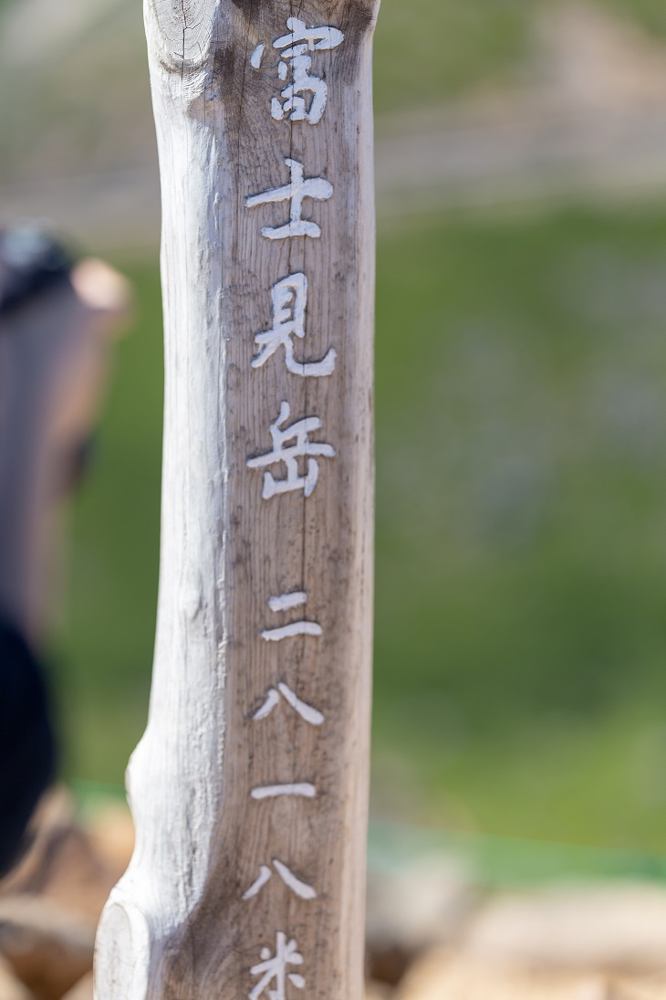</p>
<a id="more"></a>
<p>標高は高いように見えますが，登る高さはおそらく100mもないです．ただし足場がちょいとキツイ．<br>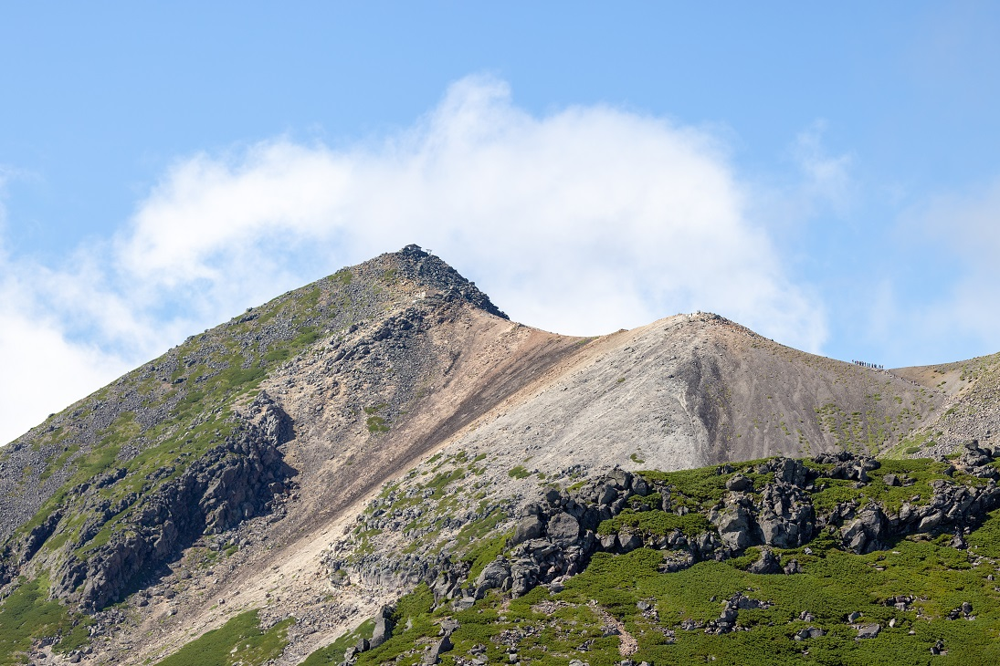</p>
<p>富士見岳から剣ヶ峰を見た時の様子．やっぱり高いな～．<br>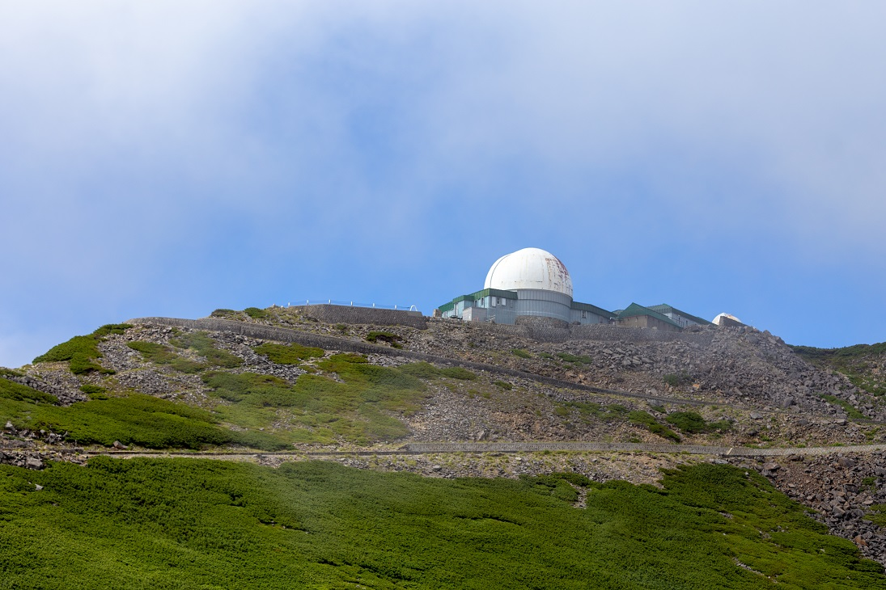</p>
<p>今は封鎖されているらしい？乗鞍の観測所です．こんなところに観測所持ってみたい…←<br>RICOHのTHETAで記念撮影をし，下山した後その辺をぶらぶら…<br>ふと草むらに動く物体を発見．よく見ると雷鳥です！この場所の他にも，結構出没してたみたいです．私はせいぜい135mmしかもっていないので，あまりクローズアップした写真は撮れませんが，仲間は望遠鏡や100-400でバシバシ撮っていました笑<br>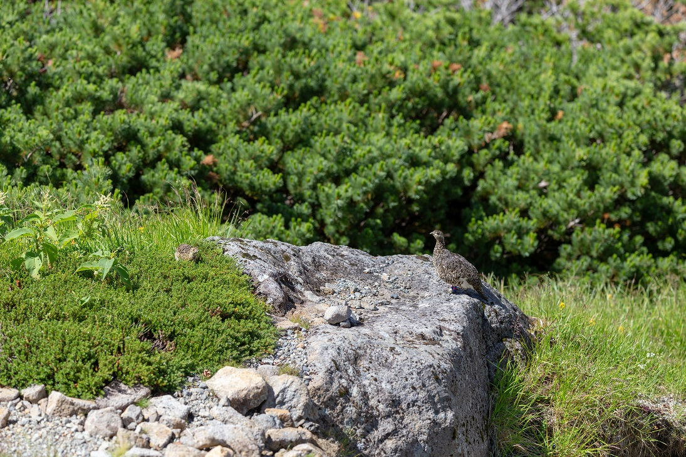</p>
<p>親子で向かい合っていてかわいいですね．<br>雷鳥撮影会をしていると，突然ものすごい音が．雪渓の一部が崩れて湖に落下した音でした（本当にびっくりした）．<br>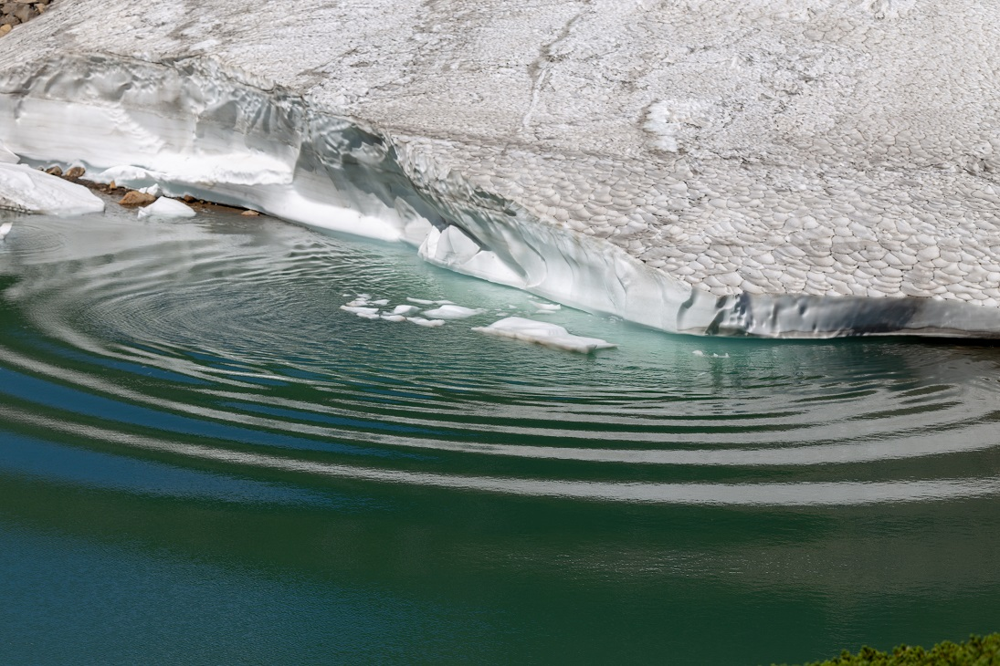</p>
<p>水面を見てもらえると，落下したときの波がわかると思います．</p>
<p>夕方になるとまた天気が怪しくなってきて，あかんかな～っと思っていたのですが，蓋を開けてみるとなんと雲海がはるレベル．近くの魔王岳からのぞむ夕日は最高でした．<br>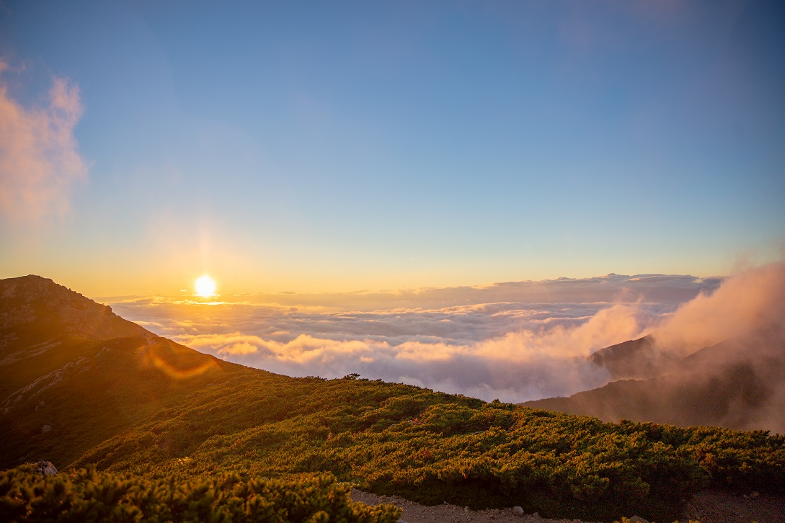</p>
<p>夜も普通に夜半過ぎまで晴れたので，一枚だけ星野を撮ったりして…<br>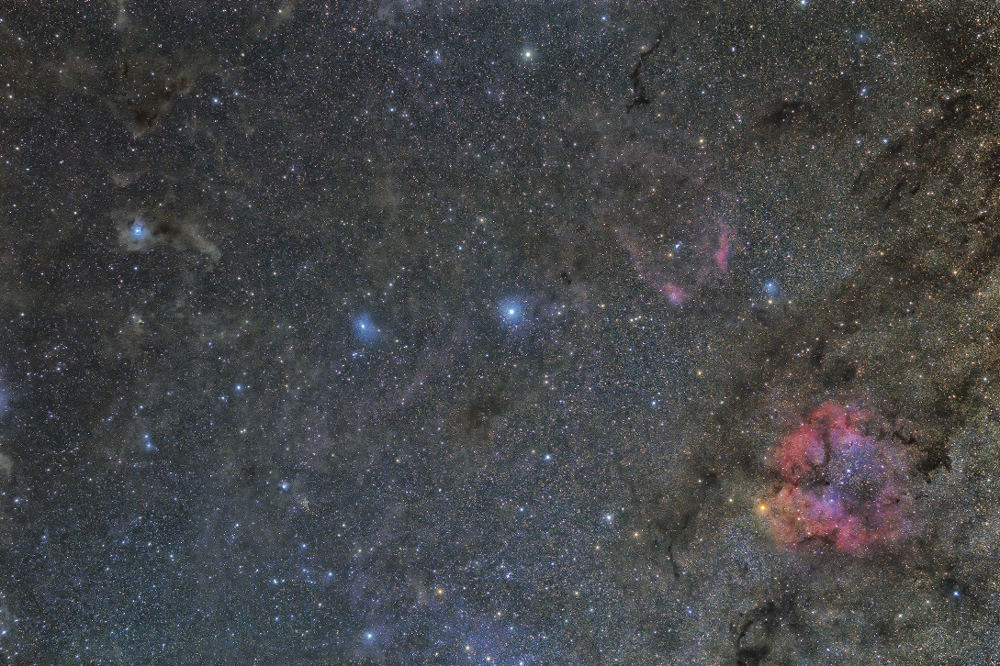</p>
<p>楽しいひと時でした．</p>
<h3 id="8-13-16-白布峠"><a href="#8-13-16-白布峠" class="headerlink" title="8/13-16 白布峠"></a>8/13-16 白布峠</h3><p>サークルでは毎年これくらいの時期になると，福島県に「強化合宿」なるものをしに行きます．といっても遊ぶだけなので，仲間や先輩後輩との絆以外には特に強化されるものはないのですが…(？)</p>
<p>晴れそうな晩には天体観測をするわけで，今年は二日目の晩に行いました．到着時は少し曇っていましたが，だんだんと晴れたので1時間くらいアンドロメダを撮影…．<br>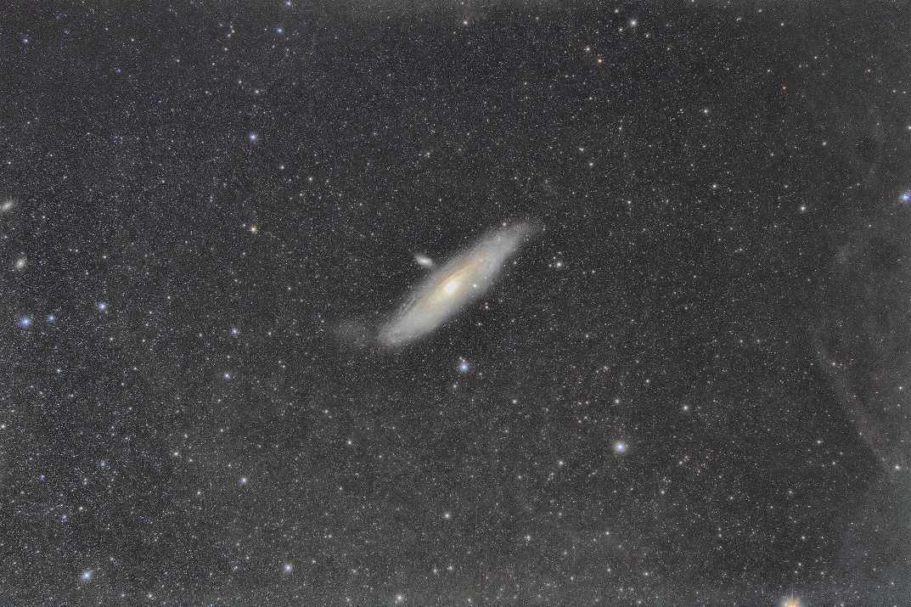<br>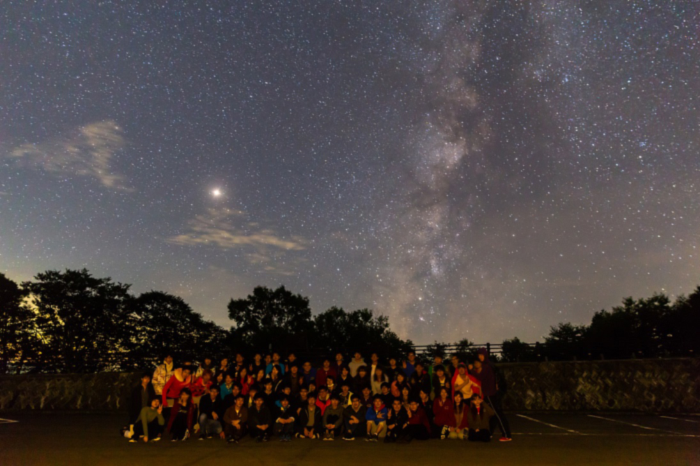</p>
<p>集合写真も撮影しました．</p>
<p>他にも，同期とドライブしたり，いつも通りワイワイ自由気ままに過ごしました．</p>
<h3 id="9-16-天城高原"><a href="#9-16-天城高原" class="headerlink" title="9/16 天城高原"></a>9/16 天城高原</h3><p>たまには(？)しっかり撮影するかーということで天城高原へ．研究室の同期と後輩を連れて行きました．</p>
<p>現地には<a href="https://twitter.com/richie_astropho" target="_blank" rel="noopener">りっちー氏</a>や<a href="https://twitter.com/ShonanAstroPhot" target="_blank" rel="noopener">けーたろ氏</a>がいらっしゃり，不安定な天気の天城を楽しんでいました．夜半過ぎからはちゃんと晴れましたね．<br>M33とサドル付近～網状を撮影…<br>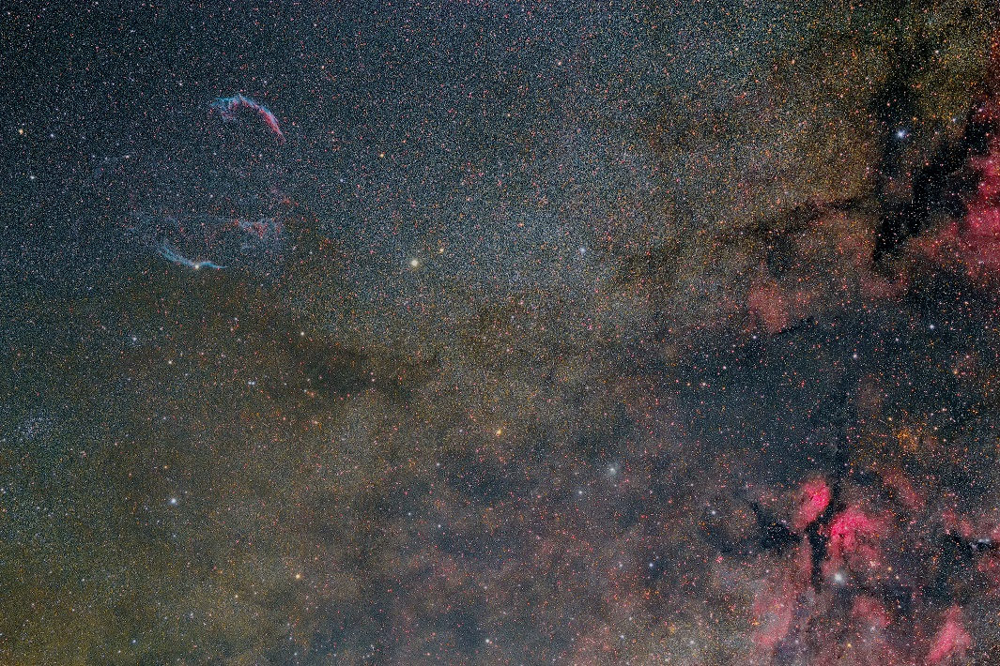<br>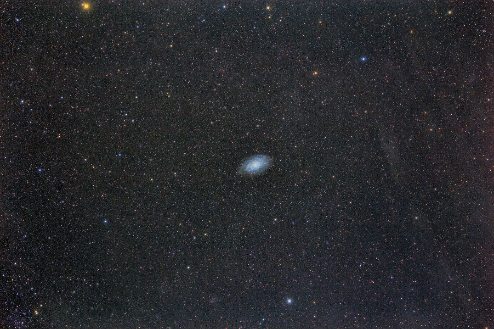</p>
<p>いや派手に処理しすぎたな…まあいいや．</p>
<p>ジャコビニ・ツィナー彗星(21P)も撮影しました．<br>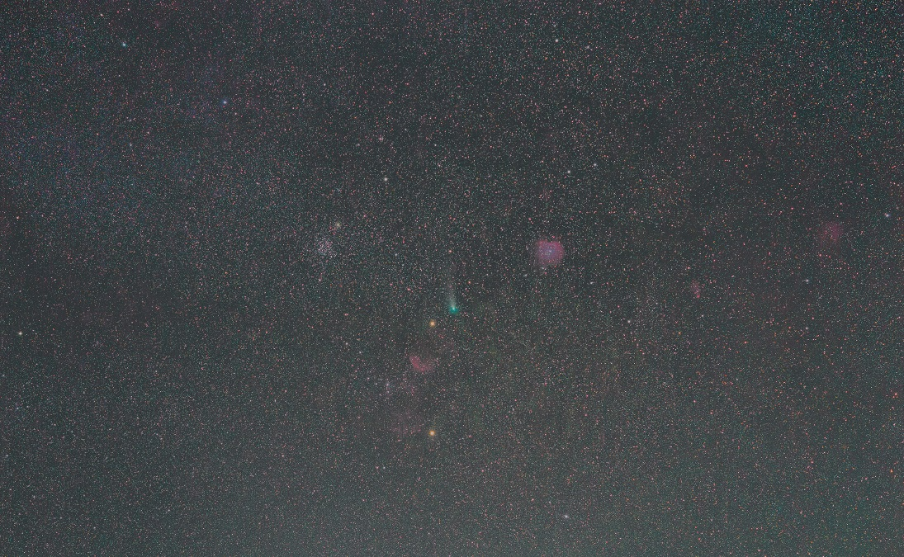</p>
<p>一枚撮りなので，クオリティーは度外視で．いやでもちゃんと尾が分かって感動しました．</p>
<p>帰りは約束の地(伊東マリンタウン)で一休みし，帰宅しました．</p>
<h3 id="10-7-富士山新五合目"><a href="#10-7-富士山新五合目" class="headerlink" title="10/7 富士山新五合目"></a>10/7 富士山新五合目</h3><p>大学は11月末頃に文化祭があるので，それに出す写真を撮影するためこの時期からカメラを持っている人間はケツに火が付き始めます．といっても，自分はもう引退済みなので関係ないのですが笑<br>足があったほうがいいよね，家の車出せる時は出せるし，ということを言い訳に，この「観測ラッシュ」に，OBである私はほぼ毎週参加しました．</p>
<p>一発目は五合目．もともと朝霧に行く予定だったのですが，この時期には野外ライブがやっているらしく断念．ただ結果的には正解でした．標高が低い朝霧などはほとんど曇って見えなかったそうです．<br>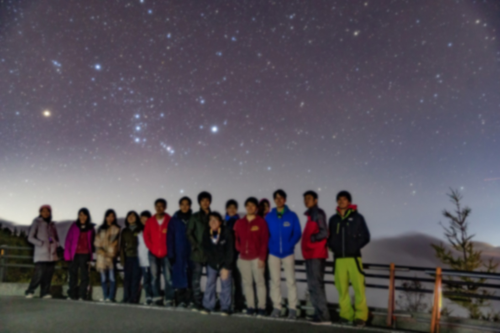</p>
<p>オリオンをバックに．このときカメラの後ろ側で車がライトを偶然点灯させ，ちくしょーと思ったのですが撮影後プレビューを確認してみると，結構いい感じ．そのまま採用しました笑</p>
<p>もともと自分の撮影計画もなかったので，後輩ちゃんに135mmを貸して撮影．ここには載せませんが，APSCにつけるのアリだな…と思いました（まあ持ってないんですが）．帰りは少しガスっていて怖かったですが，無事花の湯に到着．一休みし，後輩を何人か連れて帰還しました．<br>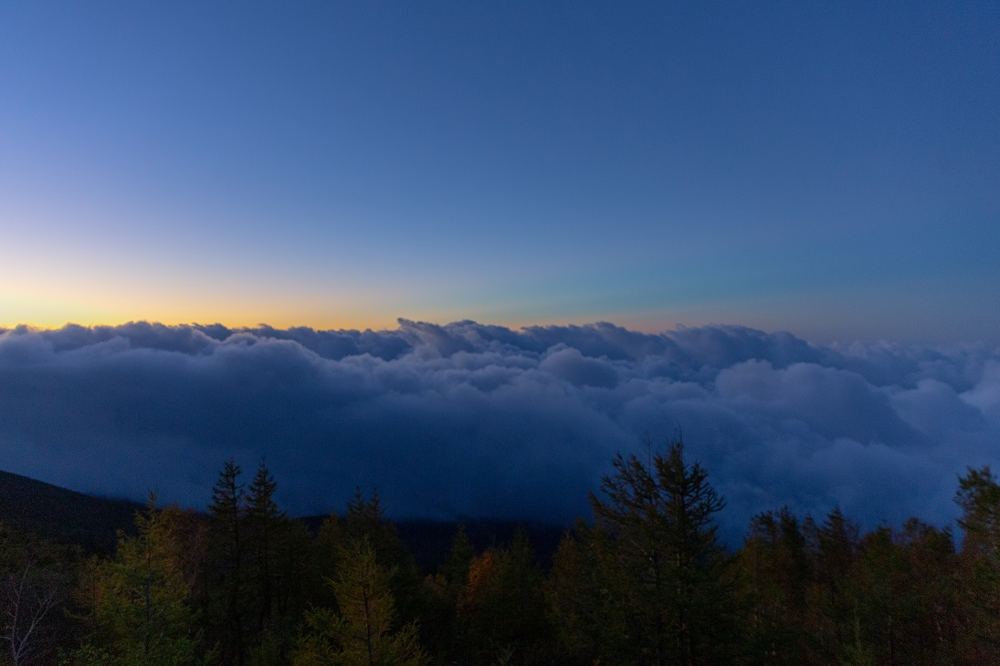</p>
<p>朝焼け．真ん中らへんの緑に近い空の色が本当に幻想的で好きです．</p>
<h3 id="10-20-本栖湖"><a href="#10-20-本栖湖" class="headerlink" title="10/20 本栖湖"></a>10/20 本栖湖</h3><p>この日はサークルの観測ラッシュとしてではなく，個人で，友人とサークルの後輩と本栖湖へ行きました．もともと1時か2時頃から晴れの予報だったのですが，1時間前倒しで晴れだしました．<a href="/2018/12/31/00000002-review-outing-2018/">前回の記事</a>で，夜にここ来たらきっと最高だなーと思ったわけですが，半年越しくらいに確認できました．結果最高でした．上弦くらいだったので，夜半すぎくらいまでは月明かりがありましたが，沈んでみると意外と暗い．ちょっとスペースが少ないですが，そこが解消できれば直焦もきっとできると思います．<br>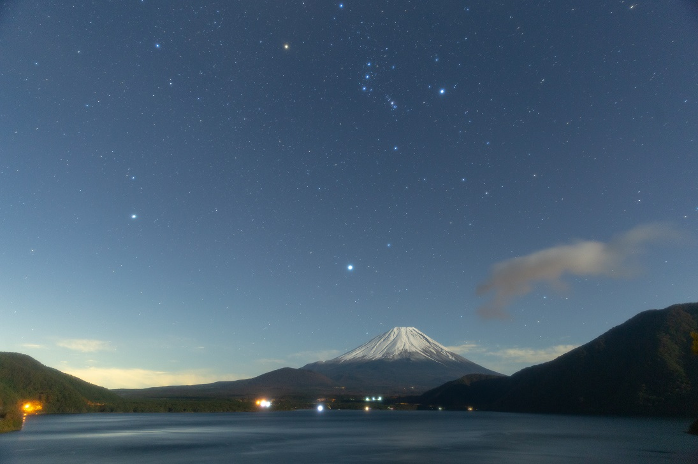</p>
<p>月明かりがある時に撮影．月がなければ，空はもっとニュートラルグレーになります．ただこれもいい．<br>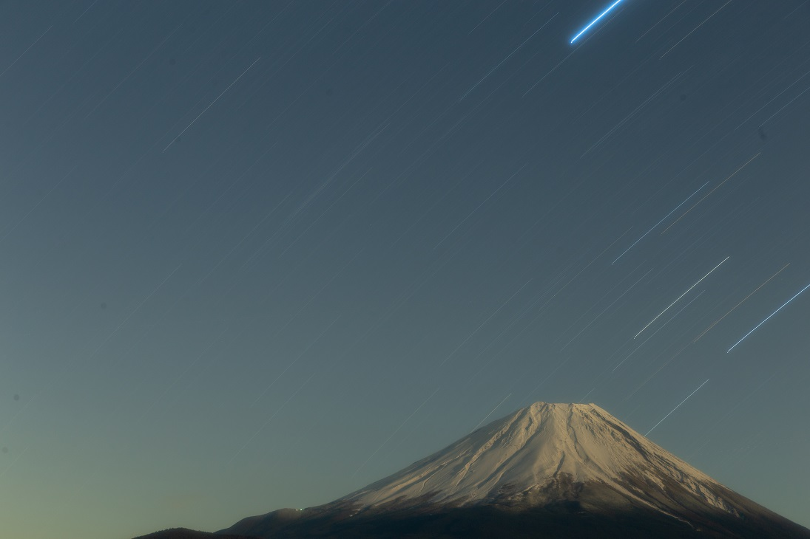</p>
<p>のぼりゆくおおいぬにクローズアップ．比較明合成ではなく，シャッター開けっぱで撮ってます．あまりやったことがなかったので．<br>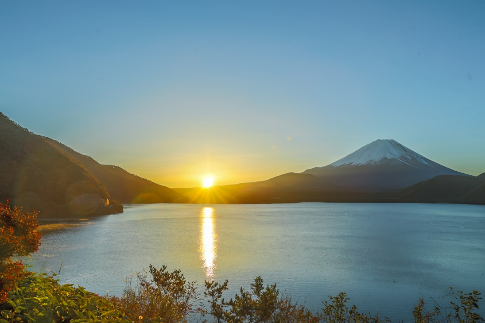</p>
<p>朝日．本当に神々しかった．．</p>
<h3 id="10-27-上毛高原キャンプグラウンド"><a href="#10-27-上毛高原キャンプグラウンド" class="headerlink" title="10/27 上毛高原キャンプグラウンド"></a>10/27 上毛高原キャンプグラウンド</h3><p>満月ということで，観測ではなくガッツリキャンプにステ振り．といっても，キャンプ用品は後輩がほとんど実家から持ってきてくれました(いや本当にありがとうございます)．鍋を3杯とカレーを1杯くらい食べました．ダッチオーブンを使った鍋も食べたのですが，これがめちゃくちゃうまい．にんじんをはじめてうまいと思うレベルでした(私は別ににんじんが嫌いなわけではないです)．<br>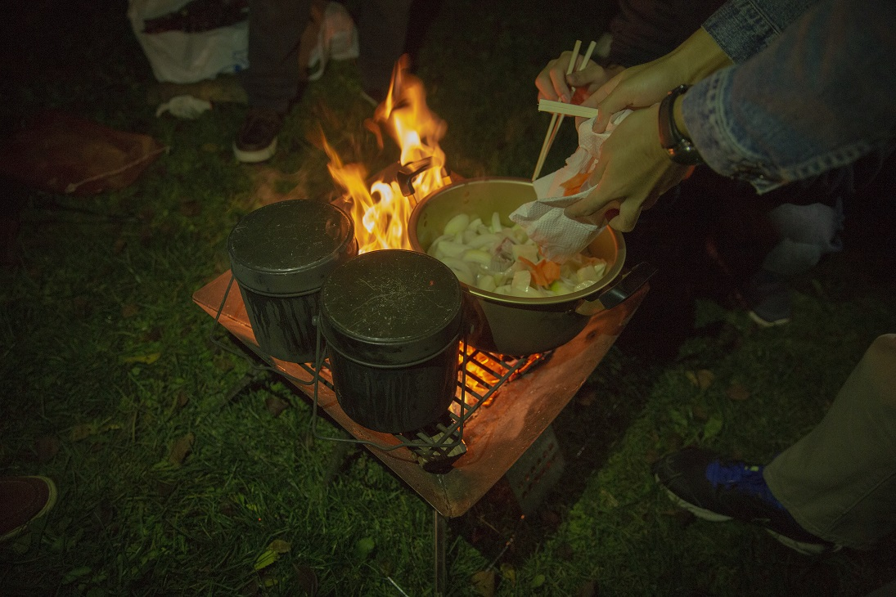<br>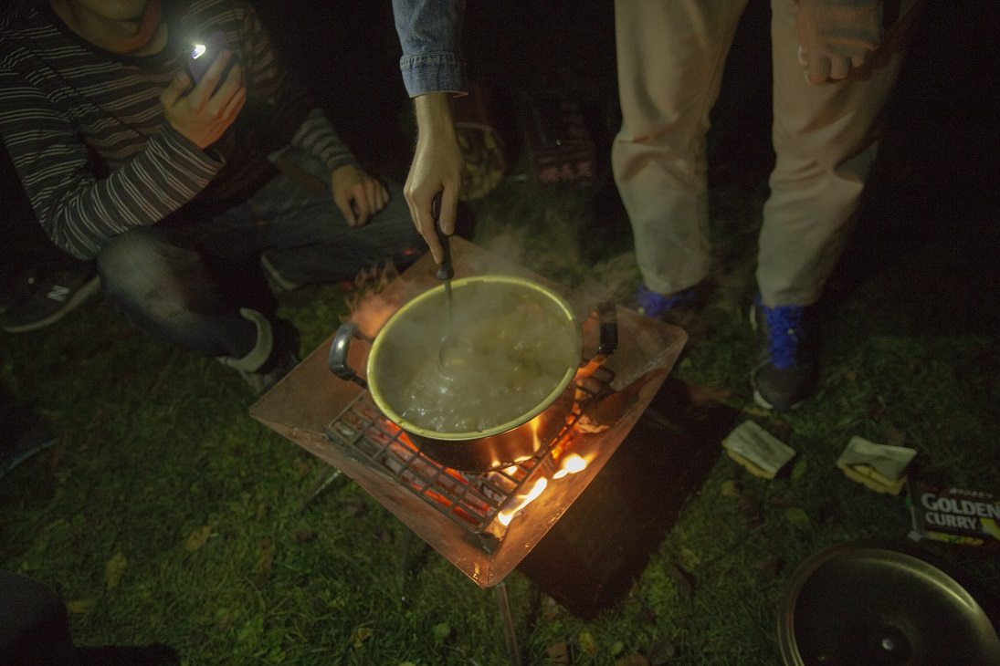<br>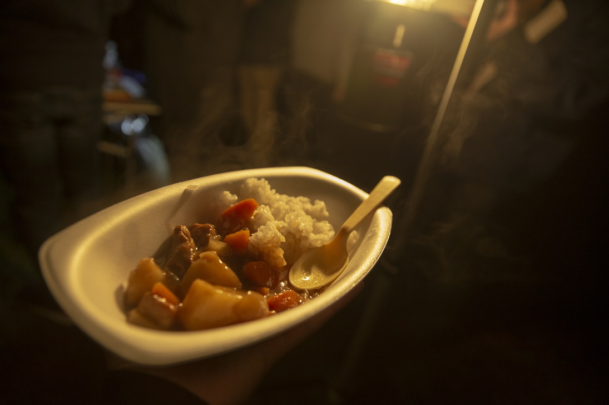<br>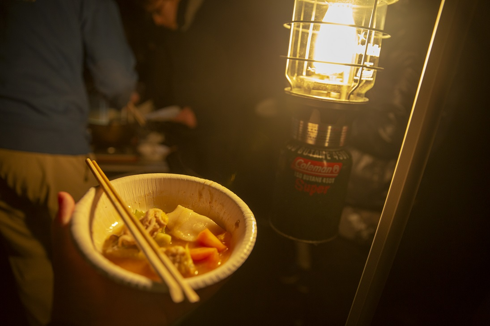</p>
<p>鍋とカレー，うまそうだろ？<br>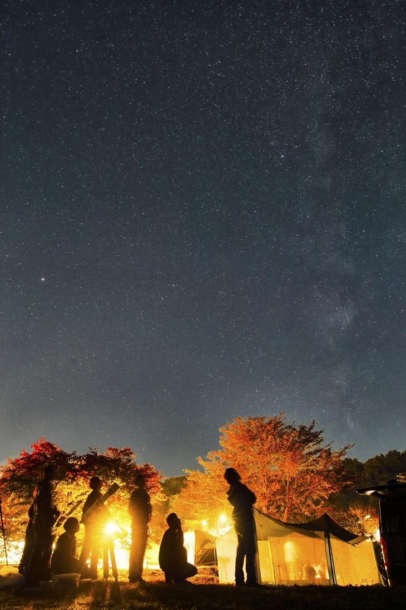</p>
<p>満月，明るい地上景．どういうの撮ろうかなあと考えた挙げ句こんな構図．なかなかキマってると思うんですが，どうですかね？<br>一応？しっかりと望遠鏡も出してます．</p>
<p>またキャンプしたいなあ．キャンプ用品買わないとなあ…()</p>
<h3 id="11-3-美ヶ原"><a href="#11-3-美ヶ原" class="headerlink" title="11/3 美ヶ原"></a>11/3 美ヶ原</h3><p>実は10/13にも美ヶ原に行ったのですが，この日は天気的に完全敗北したので載せることがなにもありません（ただ帰りに笛吹市近辺で先輩方と観光したのが楽しかったなー）．<br>さて，ここまでで2戦2敗している美ヶ原ですが，この日もこの日で到着すると霧．またやっちまったか…と思っていたらなんと夜半過ぎから晴れ．結露と格闘しながら後輩やらをバシバシ撮影しました．<br>そうそう，この日にソフトフィルターが温度順応に耐えきれずぶっ壊れたので，今年は新しいのを買わないといけません…．それから，美ヶ原には「美しの塔」という知る人ぞ知る(？)塔があるのですが（めちゃくちゃ有名です），そこからの帰る途中でレンズキャップを落とし，その後一人で暗闇&amp;濃霧の中30分ほど捜索するというアクシデントもありました…結局見つかったので良かったのですが，暗闇&amp;霧の中孤独なのはめちゃくちゃ怖かったですね．<br>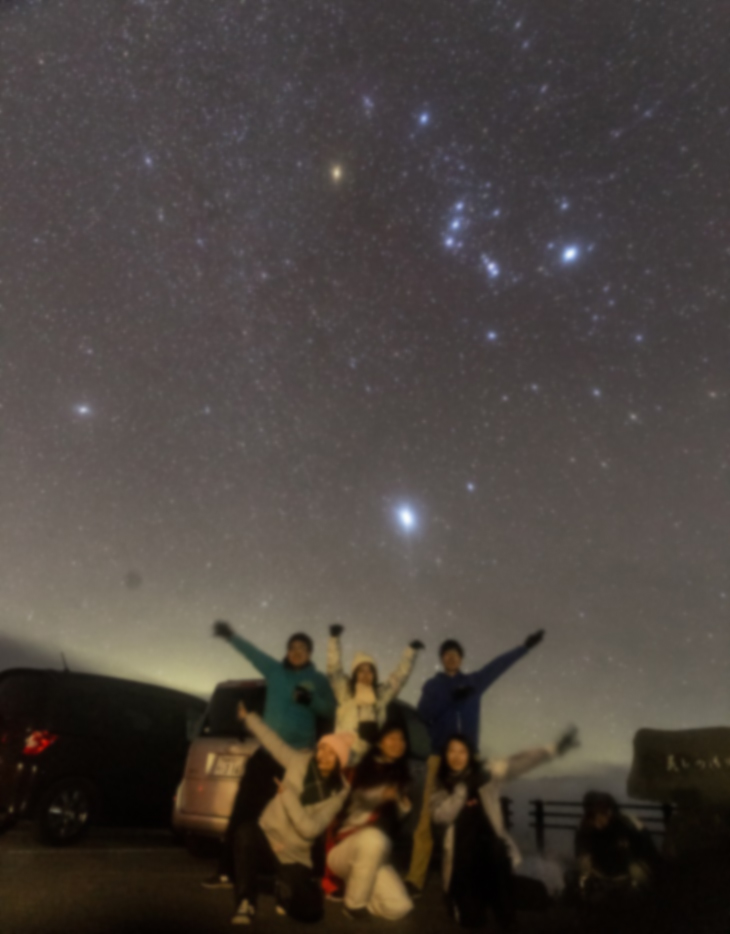</p>
<p>引退した後輩たち．めっちゃ楽しそうやんけ（てかセンサーにゴミついてるし…）．<br>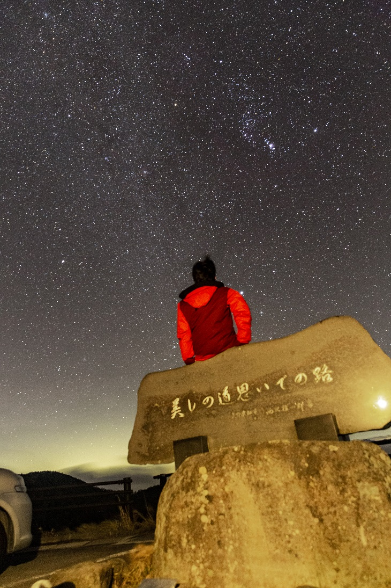</p>
<p>石碑に乗っちゃうくらい，晴れの美ヶ原が嬉しかったです（乗っちゃダメとかだったら本当にすみません）．<br>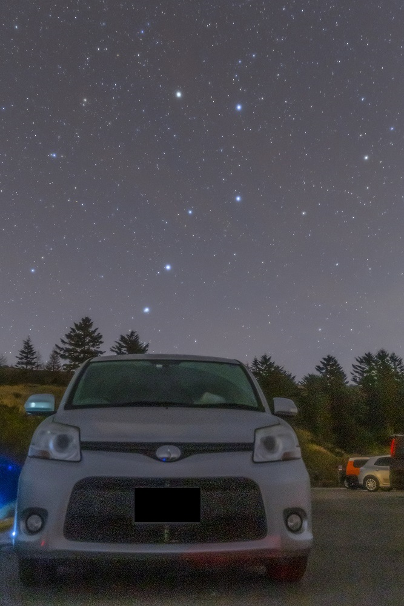</p>
<p>シエンタ．自分が1年の頃からサークルで愛用していたレンタカー車種ですが，この月をもってトヨタレンタカーでは取扱を終了．廃車になってしまうそうで．今までありがとうの気持ちを込めて，車名の由来である“Siete(スペイン語で7を意味する)”をひっかけた北斗七星をバックに．</p>
<p>この日はサークルの1個下の後輩の引退観測ということでもあり，３度目の正直で晴れて本当によかった…．</p>
<h3 id="11-10-戦場ヶ原"><a href="#11-10-戦場ヶ原" class="headerlink" title="11/10 戦場ヶ原"></a>11/10 戦場ヶ原</h3><p>サークルの引退観測も終了したので，少し休みますかーと思いきや，また観測に行くことになりました笑<br>同期に声をかけてもらい，同期のお仲間と後輩友人らと戦場ヶ原へ．よく晴れていましたが，戦場ヶ原ってこんな寒かったっけ…何もすることがなければひたすら車にこもっていました．<br>この日は後輩の面倒を見ていたので，私は一切写真を撮っていません！まあたまにはこんな日もいいよね．<br>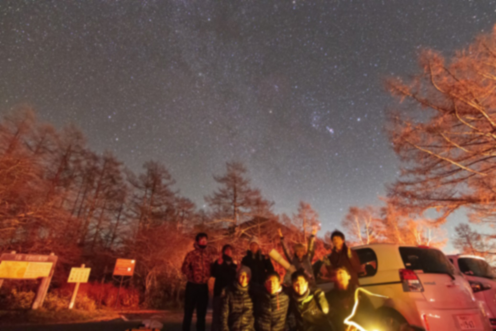</p>
<p>同期のカメラで撮影してもらいました．改造機なのでバーナードループもうっすら写ってます．<br>この日は<a href="https://nakacyg.com/" target="_blank" rel="noopener">nakaki氏</a>もいらしており，50mmでエリダヌス座のスーパーバブルを狙っていました．自分も135mmでいずれ撮ってみたい対象です（ただし映らなかったときの敗北が怖い…）．</p>
<p>とまあ，11月末の文化祭も終わり，12月は卒業研究がヤバイ，ということでこれを最後に18年は観測には行っておりません．<br>さて，結構いろんなとこ行ったなーと思ったので，マップに行った場所をプロットしてみました．<br>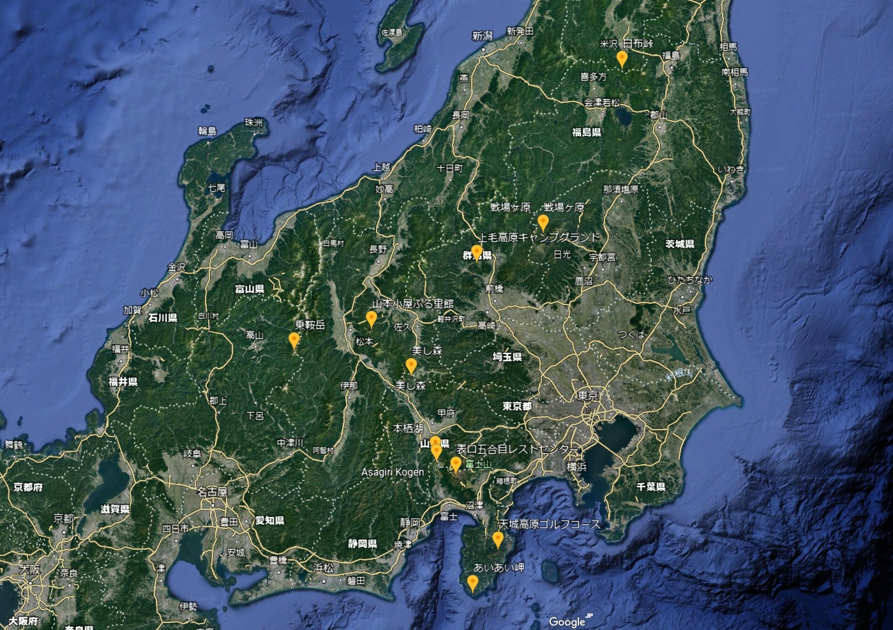</p>
<p>夜に天体観測をした場所（ただし自宅近辺を除く）になります．こうしてみると案外少ないなーという印象ですが，美ヶ原には3回行ってたりするので，まあ平均月イチぐらいで行けてるかなあという感じですね．</p>
<h3 id="まとめ"><a href="#まとめ" class="headerlink" title="まとめ"></a>まとめ</h3><p>2018年も色んな所へ行き，その場所それぞれの良さを再確認しました．機材にはほとんどお金をかけられていませんが，引き続きカメラレンズでの撮影も楽しんでいきたいところです．あとR200SSの眼視システムも整えんとな～．ある事情から，これは3月末までの可及的速やかに達成すべき目標とします．その他の今年の抱負については長くなってしまうのでまたいつか．</p>
<p>それでは本年もどうぞよろしくお願いいたします．m(_ _)m</p>

		
	</div>
	<footer class="article-footer">
		<a href="https://twitter.com/intent/tweet?text=2018%E5%B9%B4%E3%81%AE%E9%81%A0%E5%BE%81%E3%82%92%E6%8C%AF%E3%82%8A%E8%BF%94%E3%82%8B%E3%80%90%E5%BE%8C%E7%B7%A8%E3%80%91｜%E3%81%BB%E3%81%97%E3%82%88%E3%81%BF%E5%A4%A7%E5%AD%A6%E7%94%9F%E3%81%AE%E3%83%96%E3%83%AD%E3%82%B0&url=http://dabokun.github.io/2019/01/02/00000003-review-outing-2018-2/" class="twitter-share-button" target="_blank" title="Twitter"></a>
		<script async src="https://platform.twitter.com/widgets.js" charset="utf-8"></script>
	</footer>
	<footer class="entry-footer">
		<div class="entry-meta-footer">
			<span class="category">
				
  <div class="article-category">
    <a class="article-category-link" href="/categories/expedition/">遠征記</a>
  </div>

			</span>
			<span class=" tags">
				
  <ul class="article-tag-list"><li class="article-tag-list-item"><a class="article-tag-list-link" href="/tags/photography/">写真</a></li><li class="article-tag-list-item"><a class="article-tag-list-link" href="/tags/astrophotography/">天体写真</a></li><li class="article-tag-list-item"><a class="article-tag-list-link" href="/tags/expedition/">遠征記</a></li></ul>

			</span>
		</div>
	</footer>
	
	
<nav id="article-nav">
  
    <a href="/2019/03/01/00000004-astro-meeting-spring/" id="article-nav-newer" class="article-nav-link-wrap">
      <strong class="article-nav-caption">Newer</strong>
      <div class="article-nav-title">
        
          日本天文学会2019年春季年会で発表します．
        
      </div>
    </a>
  
  
    <a href="/2018/12/31/00000002-review-outing-2018/" id="article-nav-older" class="article-nav-link-wrap">
      <strong class="article-nav-caption">Older</strong>
      <div class="article-nav-title">
        
          2018年の遠征を振り返る【前編】
        
      </div>
    </a>
  
</nav>

	
</article>


<section id="comments">
	<div id="disqus_thread">
		<noscript>Please enable JavaScript to view the <a href="//disqus.com/?ref_noscript">comments powered by
				Disqus.</a></noscript>
	</div>
</section>

    </div>
    <div class="mb-search">
  <form action="//google.com/search" method="get" accept-charset="utf-8">
    <input type="search" name="q" results="0" placeholder="Search">
    <input type="hidden" name="q" value="site:dabokun.github.io">
  </form>
</div>
<footer id="footer">
	<h1 class="footer-blog-title">
		<a href="/">ほしよみ大学生のブログ</a>
	</h1>
	<span class="copyright">
		&copy; 2019 astr0dab0<br>
		Modify from <a href="http://sanographix.github.io/tumblr/apollo/" target="_blank">Apollo</a> theme, designed by <a href="http://www.sanographix.net/" target="_blank">SANOGRAPHIX.NET</a><br>
		Powered by <a href="http://hexo.io/" target="_blank">Hexo</a>
	</span>
</footer>
    
<script>
  var disqus_shortname = 'astr0dab0';
  
  var disqus_url = 'http://dabokun.github.io/2019/01/02/00000003-review-outing-2018-2/';
  
  (function(){
    var dsq = document.createElement('script');
    dsq.type = 'text/javascript';
    dsq.async = true;
    dsq.src = '//go.disqus.com/embed.js';
    (document.getElementsByTagName('head')[0] || document.getElementsByTagName('body')[0]).appendChild(dsq);
  })();
</script>


<script src="//ajax.googleapis.com/ajax/libs/jquery/2.0.3/jquery.min.js"></script>


<link rel="stylesheet" href="/fancybox/jquery.fancybox.css" media="screen" type="text/css">
<script src="/fancybox/jquery.fancybox.pack.js"></script>


<script src="/js/script.js"></script>
  </div>
</body>
</html>